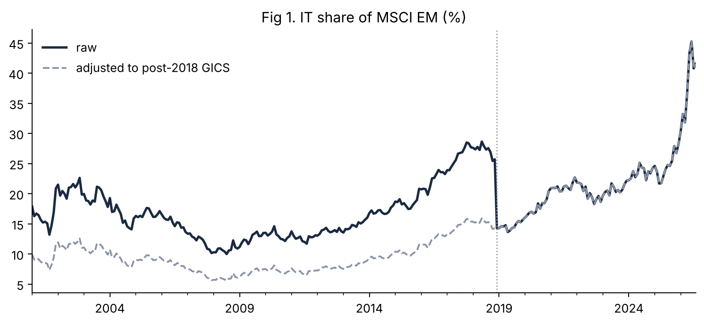
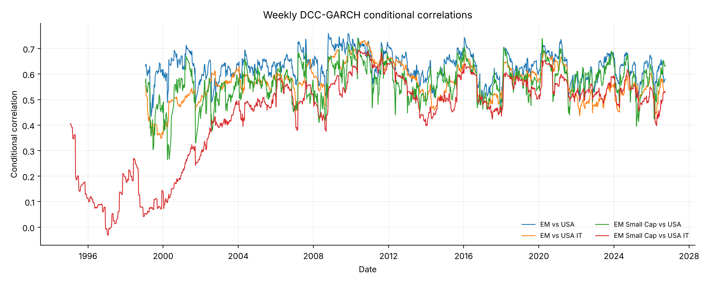
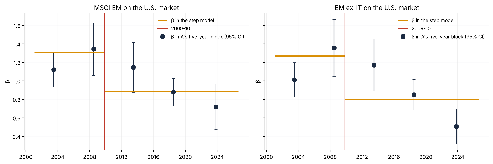
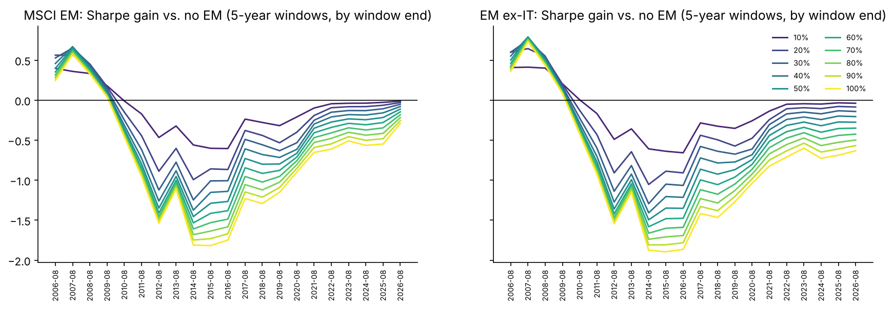
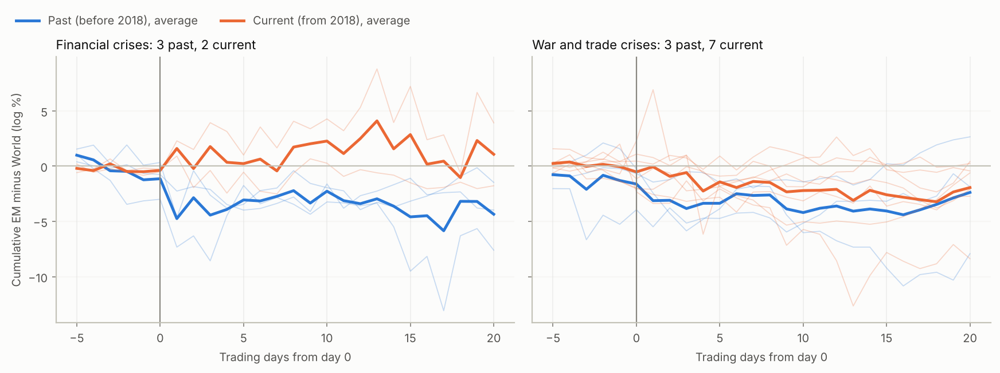

Team results on MSCI data from January 2001 to August 2026. Question 1: has EM become more like the U.S., and is technology the cause? Question 2: does EM do better relative to developed markets in today's crises than in past ones?
EM's link to the U.S. changed once, in a post-GFC transition (point estimate Oct 2009). After it, non-tech EM's sensitivity to the U.S. fell (β 1.27 → 0.80, Holm p = 0.008), while EM's link to U.S. tech shows no significant change. In 2021–26, Taiwan and Korea carry much of EM's link to U.S. tech.
EM's gain is significant only in the early 2000s. Since then the optimizer gives EM 0%, including EM ex-IT today, and adding EM does not reliably help out of sample. The optimizer's country gains cannot be told apart from chance.
Around the 15 named crises EM lost on average 2.11 points against World over 26 trading days, more than on non-crisis dates (p = 0.044). The loss was larger in past crises (−3.36, p = 0.026) than in current ones (−1.27, p = 0.49). In the monthly regression, crisis months today are not significantly different from past ones.


Each series gets the GARCH-type model that passes all three residual diagnostics with the lowest BIC; the bivariate DCC has its persistence capped at 0.998. The weekly conditional correlation of EM with the U.S. averages 0.60 in 2003, 0.70 in 2020, 0.55 in 2022 and 0.58 in 2026; with U.S. tech it stays between 0.55 and 0.61 in the same years.
| Dependent | Benchmark | Breaks | Dates | 90% CI | sup-F statistics |
|---|---|---|---|---|---|
| EM | USA | 1 | 2009-10 | 2008-07…2011-01 | 26.8, 7.3 |
| EM | USA_IT | 1 | 2007-10 | 2005-03…2010-05 | 17.3, 12.8 |
| EM_IT | USA | 0 | — | — | 5.5 |
| EM_IT | USA_IT | 0 | — | — | 4.1 |
| EM_exIT | USA | 1 | 2012-02 | 2010-11…2013-05 | 32.7, 6.4 |
| EM_exIT | USA_IT | 2 | 2007-07, 2012-07 | 2007-02…2007-12; 2011-08…2013-06 | 19.4, 17.0, 7.9 |
| EM_exTWKR | USA | 1 | 2012-12 | 2011-08…2014-04 | 32.1, 8.7 |
| EM_exTWKR | USA_IT | 2 | 2007-09, 2016-03 | 2006-12…2008-06; 2015-01…2017-05 | 18.5, 19.0, 7.1 |
| EMSC_P | USA | 1 | 2010-09 | 2009-01…2012-05 | 23.9, 5.5 |
| EMSC_P | USA_IT | 1 | 2007-07 | 2005-02…2009-12 | 18.0, 11.9 |
| Test | Dependent | Benchmark | β 2001-01…2009-10 | β 2009-11…2026-08 | δ | SE (NW) | p one-sided | p Holm |
|---|---|---|---|---|---|---|---|---|
| H1-USA | EM_exIT | USA | 1.27 | 0.80 | −0.47 | 0.16 | 0.001 | 0.008 |
| H1-IT | EM_exIT | USA_IT | 0.60 | 0.50 | −0.10 | 0.14 | 0.242 | 0.484 |
| H2-USA | SPR_IT_exIT | USA | 0.17 | 0.33 | +0.16 | 0.24 | 0.261 | 0.484 |
| H2-IT | SPR_IT_exIT | USA_IT | 0.25 | 0.40 | +0.15 | 0.14 | 0.144 | 0.432 |
| H3-USA | SPR_EM_exTWKR | USA | 0.01 | 0.10 | +0.08 | 0.06 | 0.063 | 0.254 |
| H3-IT | SPR_EM_exTWKR | USA_IT | 0.02 | 0.12 | +0.10 | 0.05 | 0.019 | 0.096 |
Regime regression with Newey–West SEs; δ = β(last regime) − β(first regime); one-sided p-values, Holm over the six tests; conditional on the break date. H1: EM ex-IT; H2: spread EM IT − EM ex-IT; H3: spread EM − EM ex-Taiwan & Korea.
| Benchmark | Dependent | 2001–05 | 2006–10 | 2011–15 | 2016–20 | 2021–26 |
|---|---|---|---|---|---|---|
| USA | EM | 1.12 (0.80) | 1.34 (0.85) | 1.15 (0.74) | 0.88 (0.78) | 0.72 (0.62) |
| USA | EM_exIT | 1.01 (0.78) | 1.36 (0.84) | 1.17 (0.73) | 0.85 (0.76) | 0.51 (0.50) |
| USA | EM_IT | 1.64 (0.73) | 1.23 (0.80) | 0.99 (0.67) | 0.97 (0.70) | 1.33 (0.67) |
| USA_IT | EM | 0.46 (0.73) | 1.08 (0.83) | 0.86 (0.65) | 0.65 (0.68) | 0.45 (0.57) |
| USA_IT | EM_exIT | 0.40 (0.67) | 1.08 (0.81) | 0.86 (0.63) | 0.61 (0.65) | 0.25 (0.36) |
| USA_IT | EM_IT | 0.77 (0.75) | 1.06 (0.85) | 0.87 (0.69) | 0.78 (0.67) | 0.98 (0.72) |

A U.S. investor holds the S&P 500 and the U.S. Aggregate. The optimizer adds MSCI EM or EM ex-IT at fixed shares of 0–100% (Module A3, rolling 5- and 10-year windows ending each August), lets eight EM countries enter freely (A3, from 2015-04), and runs the same optimizer out of sample with a 60-month lookback (Module B). Module C tests whether the gains are beyond chance.

| Asset | Block | Best EM % | Sharpe gain, free | Holm p | Sharpe gain, 10% EM | Holm p | GRS p |
|---|---|---|---|---|---|---|---|
| EM | 2001–05 | 15 | 0.433 | 0.135 | +0.380 | 0.036 | 0.005 |
| EM | 2006–10 | 4 | 0.048 | 1.000 | +0.000 | 1.000 | 0.176 |
| EM | 2011–15 | 0 | 0.000 | 1.000 | −0.672 | 1.000 | 0.001 |
| EM | 2016–20 | 0 | 0.000 | 1.000 | −0.111 | 1.000 | 0.640 |
| EM | 2021–26 | 0 | 0.000 | 1.000 | −0.024 | 1.000 | 0.656 |
| EM_exIT | 2001–05 | 17 | 0.478 | 0.085 | +0.392 | 0.015 | 0.004 |
| EM_exIT | 2006–10 | 5 | 0.054 | 1.000 | +0.011 | 1.000 | 0.164 |
| EM_exIT | 2011–15 | 0 | 0.000 | 1.000 | −0.717 | 1.000 | 0.001 |
| EM_exIT | 2016–20 | 0 | 0.000 | 1.000 | −0.168 | 1.000 | 0.384 |
| EM_exIT | 2021–26 | 0 | 0.000 | 1.000 | −0.046 | 1.000 | 0.977 |
| Portfolio (60-month lookback) | Months | Return %/yr | Volatility %/yr | Sharpe | Max drawdown % |
|---|---|---|---|---|---|
| Benchmark (minvar) | 248 | 3.24 | 4.29 | 0.36 | −16.51 |
| Benchmark (sharpe) | 248 | 6.41 | 8.16 | 0.59 | −22.11 |
| + Broad EM (minvar) | 248 | 3.23 | 4.30 | 0.36 | −16.73 |
| + Broad EM (sharpe) | 248 | 6.39 | 8.92 | 0.55 | −27.89 |
| + EM ex-IT (minvar) | 248 | 3.23 | 4.31 | 0.36 | −16.87 |
| + EM ex-IT (sharpe) | 248 | 6.48 | 9.24 | 0.54 | −31.43 |
| + EM ex-TWKR (minvar) | 247 | 3.23 | 4.32 | 0.36 | −16.85 |
| + EM ex-TWKR (sharpe) | 247 | 6.47 | 9.41 | 0.53 | −32.32 |
| + EM Small Cap Net (minvar) | 135 | 2.11 | 4.89 | 0.01 | −16.55 |
| + EM Small Cap Net (sharpe) | 135 | 8.72 | 10.36 | 0.65 | −22.11 |
| + Optimal EM Countries OOS (minvar) | 16 | 3.02 | 3.45 | −0.25 | −2.57 |
| + Optimal EM Countries OOS (sharpe) | 16 | 28.89 | 12.33 | 1.82 | −5.70 |
Each of the 15 named crises is checked against the crisis rule in its event month. Financial: MSCI World at least 10% below its running peak at the month end; if the 10% level is reached only between Day 0 and Day +20 (daily data), the event is kept as shock-triggered. War: GPR in its top decile. Trade: TPU in its top decile.
| Crisis | Date | Type | Period | Test (event month) | Value | Threshold | Result | Status |
|---|---|---|---|---|---|---|---|---|
| Lehman bankruptcy | 2008-09-15 | Fin | Past | World month-end drawdown | −28.2% | −10% | Met | Core |
| US downgrade / euro crisis | 2011-08-08 | Fin | Past | World month-end drawdown | −21.6% | −10% | Met | Core |
| China devaluation | 2015-08-11 | Fin | Past | World month-end drawdown | −7.2% | −10% | Met only after event | Shock-triggered |
| 9/11 attacks | 2001-09-11 | Geo | Past | GPR | 498.6 | 158.0 | Met | Core |
| Iraq invasion | 2003-03-20 | Geo | Past | GPR | 358.7 | 158.0 | Met | Core |
| Crimea annexation | 2014-03-03 | Geo | Past | GPR | 119.8 | 158.0 | Not met | Additional case |
| COVID crash | 2020-02-24 | Fin | Current | World month-end drawdown | −9.0% | −10% | Met only after event | Shock-triggered |
| SVB collapse | 2023-03-10 | Fin | Current | World month-end drawdown | −11.8% | −10% | Met | Core |
| Russia invades Ukraine | 2022-02-24 | Geo | Current | GPR | 216.2 | 158.0 | Met | Core |
| Hamas attack on Israel | 2023-10-09 | Geo | Current | GPR | 197.9 | 158.0 | Met | Core |
| Israel-Iran war | 2025-06-13 | Geo | Current | GPR | 222.3 | 158.0 | Met | Core |
| US Section 301 China tariffs | 2018-03-22 | Trade | Current | TPU | 260.6 | 165.2 | Met | Core |
| US-China tariff escalation | 2019-05-06 | Trade | Current | TPU | 189.8 | 165.2 | Met | Core |
| Yuan breaks 7 / new tariffs | 2019-08-05 | Trade | Current | TPU | 254.2 | 165.2 | Met | Core |
| 'Liberation Day' tariffs | 2025-04-03 | Trade | Current | TPU | 1151.4 | 165.2 | Met | Core |
Core = rule met in the event month (12 events). Shock-triggered = the 10% drawdown is reached only after the event (China devaluation, COVID). Additional case = rule not met (Crimea annexation: GPR 119.8 against 158.0); it is kept as a third past war event and is labelled as such.
Daily log returns of MSCI EM and MSCI World, summed from 5 trading days before to 20 trading days after each crisis. Day 0 is the first trading day on or after the event date.
| Crisis | Status | Day 0 | EM − World [−5, 0] | EM − World [−5, +5] | EM [−5, +20] | World [−5, +20] | EM − World [−5, +20] |
|---|---|---|---|---|---|---|---|
| Past financial crises (before 2018) | |||||||
| Lehman bankruptcy | Core | 2008-09-15 | −3.00 | −1.75 | −31.52 | −23.91 | −7.61 |
| US downgrade / euro crisis | Core | 2011-08-08 | +0.33 | −3.45 | −13.63 | −12.16 | −1.47 |
| China devaluation | Shock-triggered | 2015-08-11 | −0.75 | −3.98 | −11.66 | −7.69 | −3.97 |
| Average of 3 | −1.14 | −3.06 | −18.94 | −14.59 | −4.35 | ||
| Current financial crises (from 2018) | |||||||
| COVID crash | Shock-triggered | 2020-02-24 | −0.50 | +1.00 | −37.57 | −41.49 | +3.92 |
| SVB collapse | Core | 2023-03-10 | −0.27 | −0.55 | +1.06 | +2.83 | −1.77 |
| Average of 2 | −0.38 | +0.23 | −18.26 | −19.33 | +1.07 | ||
| Past war crises (before 2018) | |||||||
| 9/11 attacks | Core | 2001-09-11 | −0.24 | −3.85 | −14.77 | −6.85 | −7.92 |
| Iraq invasion | Core | 2003-03-20 | −3.94 | −4.73 | +9.29 | +11.16 | −1.87 |
| Crimea annexation | Additional case | 2014-03-03 | −0.67 | −1.50 | +3.78 | +1.13 | +2.65 |
| Average of 3 | −1.62 | −3.36 | −0.57 | +1.81 | −2.38 | ||
| Current war crises (from 2018) | |||||||
| Russia invades Ukraine | Core | 2022-02-24 | −2.32 | −2.06 | −8.79 | −0.41 | −8.38 |
| Hamas attack on Israel | Core | 2023-10-09 | −2.05 | −1.82 | +1.76 | +1.34 | +0.42 |
| Israel-Iran war | Core | 2025-06-13 | +0.46 | +0.91 | +4.31 | +4.06 | +0.24 |
| Average of 3 | −1.30 | −0.99 | −0.91 | +1.66 | −2.57 | ||
| Current trade conflicts (from 2018) | |||||||
| US Section 301 China tariffs | Core | 2018-03-22 | +1.09 | −0.90 | −2.69 | −0.60 | −2.09 |
| US-China tariff escalation | Core | 2019-05-06 | −1.14 | −1.86 | −6.36 | −5.75 | −0.61 |
| Yuan breaks 7 / new tariffs | Core | 2019-08-05 | −1.98 | −2.81 | −6.15 | −3.42 | −2.72 |
| 'Liberation Day' tariffs | Core | 2025-04-03 | +2.29 | −1.43 | −1.43 | −1.00 | −0.43 |
| Average of 4 | +0.06 | −1.75 | −4.16 | −2.69 | −1.46 | ||
Cumulative log returns in % (percentage points). EM − World [−5, k] is the sum of daily EM minus World returns from Day −5 to Day k.

The mean EM − World [−5, +20] of the named crises is compared with 5,000 placebo sets of non-crisis dates. Each set draws as many past and current dates as there are events, without replacement, from months with no Fin, GPR or TPU flag and outside ±25 trading days of every named event (1,802 past and 1,003 current dates).
| Events | n | Observed mean | Placebo mean | Difference | p (two-sided) | Placebo 95% range |
|---|---|---|---|---|---|---|
| All 15 | 15 | −2.11 | −0.24 | −1.87 | 0.044 | [−2.04, +1.59] |
| Core 12 | 12 | −2.85 | −0.29 | −2.56 | 0.011 | [−2.33, +1.67] |
| Excluding Crimea (14) | 14 | −2.45 | −0.28 | −2.16 | 0.023 | [−2.13, +1.57] |
| Past | 6 | −3.36 | +0.08 | −3.44 | 0.026 | [−3.03, +3.15] |
| Current | 9 | −1.27 | −0.50 | −0.77 | 0.486 | [−2.63, +1.70] |
Mean cumulative EM − World log return from Day −5 to Day +20, in percentage points. Two-sided empirical p-value centred on the placebo mean. Core 12 = the events that meet the rule in the event month. A descriptive randomization benchmark, not a causal test and not a test of the difference between past and current crises.
γ3 and γ4 measure how EM's monthly return relative to World in a financial or war / trade crisis month today differs from the past. Post = 1 after Module C's break (Oct 2009). Xt = monthly changes in the VIX and the dollar index (DXY). 308 months: 116 past and 18 current Fin months, 17 past and 36 current Geo months.
| Panel A · with Post (break Oct 2009) | Panel B · without Post | |||||||
|---|---|---|---|---|---|---|---|---|
| (1) EM | (2) EM + X | (3) EM ex-IT | (4) EM ex-IT + X | (5) EM | (6) EM + X | (7) EM ex-IT | (8) EM ex-IT + X | |
| γ1 Fin | -0.02 (-0.04) | 0.04 (0.09) | 0.01 (0.03) | 0.09 (0.19) | 0.54 (1.07) | 0.53 (1.13) | 0.70 (1.32) | 0.68 (1.41) |
| γ2 Geo | 0.30 (0.32) | 0.09 (0.08) | 0.22 (0.29) | 0.00 (0.00) | 0.85 (0.95) | 0.56 (0.52) | 0.89 (1.29) | 0.58 (0.67) |
| γ3 Fin × Current | -0.01 (-0.01) | 0.05 (0.07) | 0.16 (0.20) | 0.23 (0.27) | -0.86 (-1.18) | -0.69 (-0.96) | -0.88 (-1.05) | -0.66 (-0.77) |
| γ4 Geo × Current | -0.08 (-0.07) | 0.19 (0.15) | -0.39 (-0.41) | -0.11 (-0.11) | -0.93 (-0.86) | -0.55 (-0.45) | -1.43 (-1.62) | -1.00 (-1.02) |
| γ1+γ3 (current Fin) | -0.02 (-0.04) | 0.09 (0.14) | 0.18 (0.24) | 0.32 (0.40) | -0.31 (-0.47) | -0.16 (-0.24) | -0.18 (-0.22) | 0.02 (0.02) |
| γ2+γ4 (current Geo) | 0.23 (0.38) | 0.28 (0.51) | -0.17 (-0.31) | -0.11 (-0.23) | -0.08 (-0.13) | 0.02 (0.03) | -0.54 (-0.98) | -0.43 (-0.88) |
| θ Post | -1.48*** (-3.09) | -1.30*** (-2.86) | -1.82*** (-3.61) | -1.58*** (-3.35) | not included | not included | not included | not included |
| φ ΔVIX | 0.02 (0.40) | 0.06 (0.97) | 0.03 (0.51) | 0.07 (1.10) | ||||
| φ ΔDXY | -0.43*** (-3.95) | -0.53*** (-4.82) | -0.45*** (-4.23) | -0.56*** (-5.17) | ||||
| α constant | 1.06** (2.24) | 0.91** (2.01) | 1.18** (2.35) | 0.98** (2.07) | -0.10 (-0.33) | -0.11 (-0.40) | -0.25 (-0.77) | -0.26 (-0.89) |
| R² | 0.042 | 0.109 | 0.061 | 0.155 | 0.013 | 0.087 | 0.021 | 0.125 |
| Months | 308 | 308 | 308 | 308 | 308 | 308 | 308 | 308 |
Dependent variable: monthly log return of the named index minus MSCI World (USD net), in %. Coefficients with Newey–West t-statistics (5 lags) in brackets. "+ X" adds ΔVIX (points) and ΔDXY (%). * 10%, ** 5%, *** 1%.
| Robustness (with Post) | ||||||
|---|---|---|---|---|---|---|
| (9) EM local ccy | (10) EM local ccy + X | (11) EM, from 2022 | (12) EM, from 2022 + X | (13) EM ex-IT, from 2022 | (14) EM ex-IT, from 2022 + X | |
| γ1 Fin | 0.12 (0.35) | 0.13 (0.38) | 0.11 (0.25) | 0.14 (0.35) | 0.12 (0.28) | 0.17 (0.40) |
| γ2 Geo | 0.10 (0.09) | 0.30 (0.28) | -0.33 (-0.48) | -0.44 (-0.59) | -0.28 (-0.52) | -0.40 (-0.65) |
| γ3 Fin × Current | 0.24 (0.35) | 0.22 (0.37) | -0.30 (-0.47) | -0.20 (-0.29) | -0.08 (-0.11) | 0.05 (0.05) |
| γ4 Geo × Current | 0.38 (0.32) | 0.15 (0.13) | 1.12 (1.27) | 1.28 (1.44) | 0.47 (0.60) | 0.63 (0.84) |
| γ1+γ3 (current Fin) | 0.36 (0.57) | 0.35 (0.65) | -0.19 (-0.33) | -0.05 (-0.08) | 0.04 (0.06) | 0.22 (0.26) |
| γ2+γ4 (current Geo) | 0.48 (0.96) | 0.45 (0.92) | 0.79 (1.35) | 0.83 (1.55) | 0.19 (0.33) | 0.23 (0.46) |
| θ Post | -1.30*** (-3.58) | -1.24*** (-3.31) | -1.56*** (-3.35) | -1.36*** (-3.05) | -1.87*** (-3.84) | -1.62*** (-3.51) |
| φ ΔVIX | 0.13*** (2.75) | 0.02 (0.37) | 0.06 (0.95) | |||
| φ ΔDXY | 0.01 (0.09) | -0.43*** (-3.91) | -0.53*** (-4.80) | |||
| α constant | 0.94** (2.57) | 0.90** (2.44) | 1.07** (2.26) | 0.91** (2.04) | 1.17** (2.35) | 0.97** (2.08) |
| R² | 0.044 | 0.093 | 0.046 | 0.114 | 0.061 | 0.156 |
| Months | 308 | 308 | 308 | 308 | 308 | 308 |